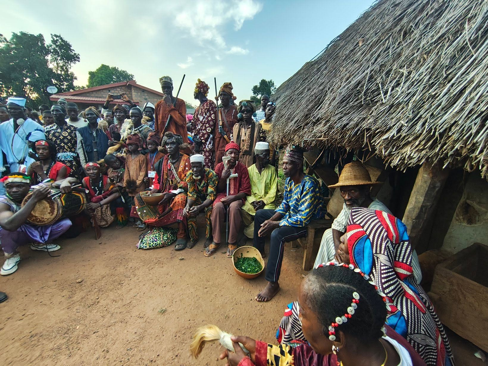
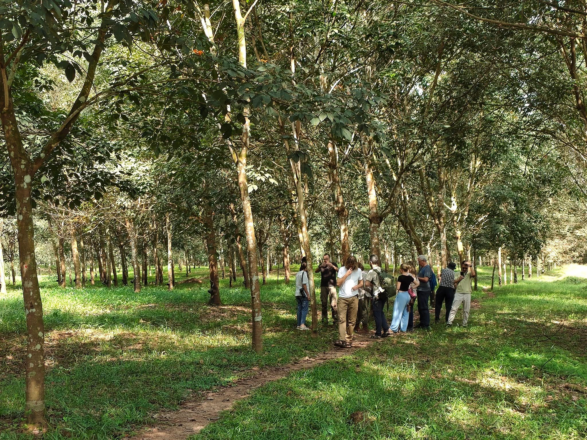
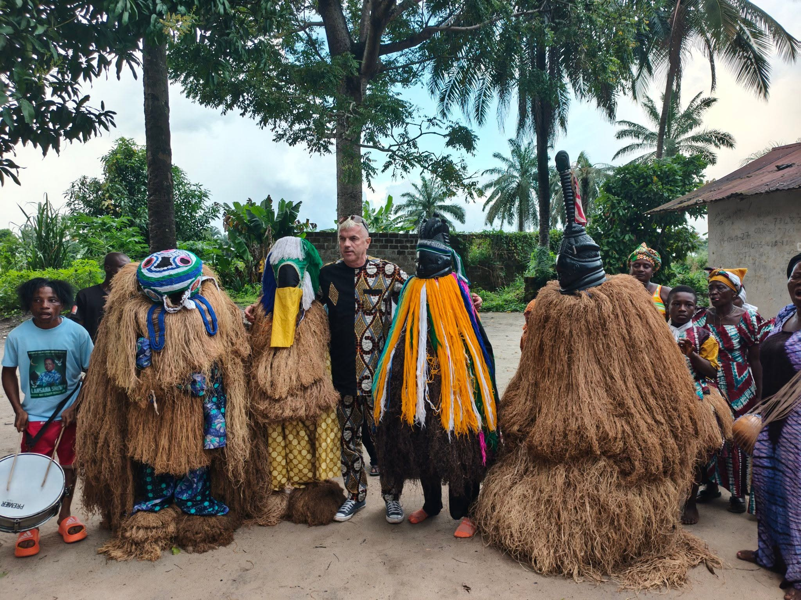

Travel the real Mali and West Africa, with someone who lives it
Plan a realistic private trip with Djibril Kassogue — an official local guide who helps travellers with Bamako, heritage routes, cultural context, transport, and safety-aware planning.
You do not need a finished itinerary
Send a few practical details on WhatsApp and Djibril will tell you what is realistic, what may need adjusting, and how to plan it responsibly.
Message Djibril with these detailsPrivate Mali trips, planned around real conditions
Choose a starting idea, then message Djibril to shape the route around your dates, budget, pace, and what is realistic right now.
Trust, context, and real help from the ground
{{ x.title }}
{{ x.body }}

Djibril Kassogue
Local guiding is not only about showing places. It is cultural context, route judgement, practical timing, and help when plans need to adapt. Djibril has spent years helping travellers understand Mali beyond surface-level tourism.
He speaks the local languages, knows trusted contacts across the country, and — most importantly — will tell you honestly what is realistic for your dates rather than promising routes blindly.

Three simple steps to a custom trip
{{ s.text }}
A real look at Mali — people, routes, culture
Guiding moments, city life, river travel, textiles, and community visits. Here to build practical trust, not to sell a postcard.
Safety and feasibility come first
Mali travel can change quickly. Djibril does not promise routes blindly. He advises what is realistic based on current local conditions, transport, timing, border rules, and practical safety considerations.
Ask what is realistic for your datesPlanning a private Mali trip
{{ f.a }}

Plan a realistic private trip in Mali
Send Djibril your dates, group size, and the places you hope to visit. He can advise what is practical, what may need adjustment, and how to plan the route responsibly.
Message Djibril on WhatsAppDates · Group size · Places of interest · Preferred language · Travel pace